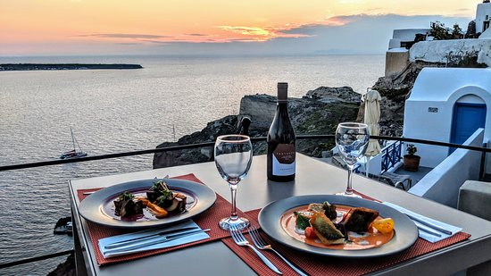
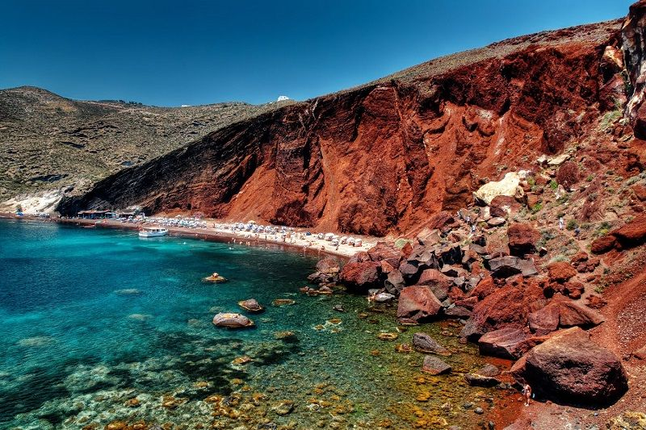
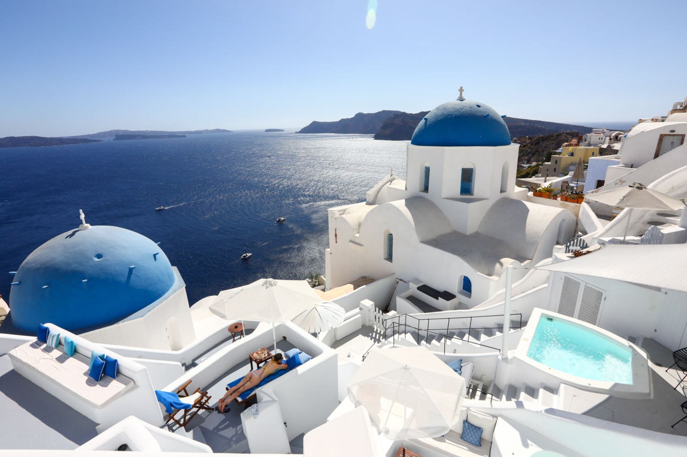

Santorini
Santorini é uma ilha deslumbrante localizada no Mar Egeu, na Grécia, e é conhecida pelas suas paisagens impressionantes, vilas e pores do sol inesquecíveis. Com as suas casas brancas e o azul intenso do mar, Santorini é um destino de sonho para os viajantes. Vamos explorar alguns dos seus pontos turísticos mais notáveis.
A cidade de Fira, a capital de Santorini, é uma animada cidade cheia de lojas, restaurantes e bares. A vista panorâmica do Mar Egeu a partir dos penhascos de Fira é de tirar o fôlego.
A praia de areia negra de Perissa é uma das mais famosas de Santorini. A paisagem única e o mar cristalino proporcionam um ambiente encantador para relaxar e desfrutar do sol.
Os vinhedos de Santorini são famosos por sua produção de vinhos únicos. As vinícolas da ilha oferecem visitas guiadas e degustações, permitindo que os visitantes experimentem os sabores distintos dos vinhos locais, como o Vin Santo e o Assyrtiko.

Ombra Restaurant

Red Beach

Santorini